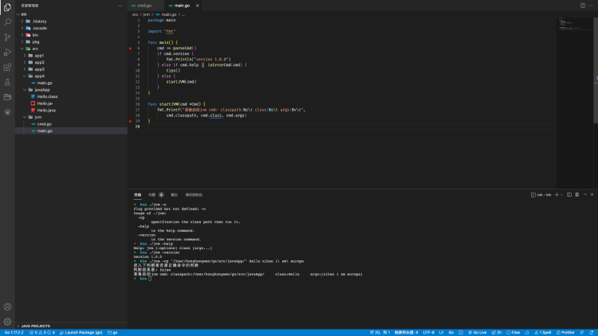

GO实现Java命令
内容
借go语言实现java以下命令：
- java -version
- java -help
- java [-options] class [args...]
关于第三个命令：
java [-options] class [args...]
常用使用方法如下，-cp指定class文件位置然后加上类名再加参数运行main方法。
2. 代码实现
由于是写jvm的功能，所以换了个语言，本人选用的是Golang。
2.1 help、version实现
在Go中，flag包可以帮助解析命令行。
package main
import (
"flag"
"fmt"
)
// 定义命令行构造体
type Cmd struct {
help bool
version bool
cp bool
classpath string
clazz string
args []string
}
// 解析命令行
func parseCmd() *Cmd {
cmd := &Cmd{}
// 定义命令行的指令参数
flag.BoolVar(&cmd.help, "help", false, "is the help command.")
flag.BoolVar(&cmd.version, "version", false, "is the version command.")
flag.BoolVar(&cmd.cp, "cp", false, "specification the class path then run it.")
// 将解析命令行
flag.Parse()
// 未能解析的非指令参数
args := flag.Args()
if len(args) > 0 {
cmd.classpath = args[0] // 非指令参数 第一个为classpath
cmd.clazz = args[1] // 非指令参数 第二个为class
cmd.args = args[2:] // 非指令参数 后续参数皆为args
}
return cmd
}
// 判断是不是错误的命令
func isErrorCmd(cmd *Cmd) bool {
fmt.Println("进入了判断是否是正确命令的判断")
isError := cmd.help || cmd.version || cmd.classpath == "" || cmd.clazz == ""
fmt.Println("判断结果是:", isError)
return isError
}
// 输出提示语句
func tips() {
fmt.Println("Help: jvm [-options] class [args...]")
}
package main
import "fmt"
func main() {
cmd := parseCmd()
if cmd.version {
fmt.Println("version 1.0.0")
} else if cmd.help || isErrorCmd(cmd) {
tips()
} else {
startJVM(cmd)
}
}
func startJVM(cmd *Cmd) {
fmt.Printf("准备启动jvm cmd: classpath:%s\t class:%s\t args:%v\n",
cmd.classpath, cmd.clazz, cmd.args)
}
2.2 运行class的实现
3 测试
install之后运行程序，没啥太大问题。
- ./jvm -n 这是个错误命令，未在flag中定义，所以会输出默认的Usage信息。
- ./jvm -version 正确输出main.go中的version信息
- ./jvm -help 正确输出了tips方法提示
- ./jvm -cp class classname args... 先解析出参数。
